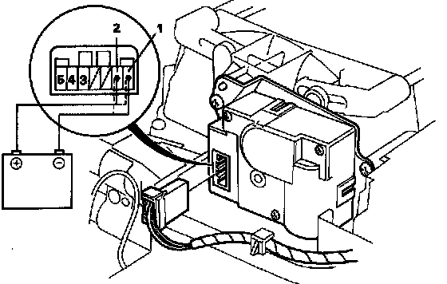
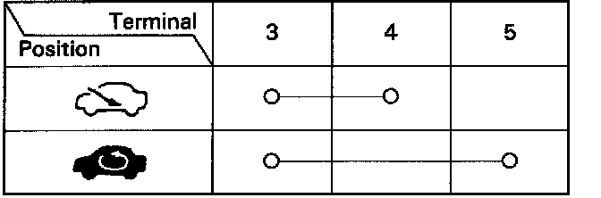

Recirculation Control Motor
Recirculation Control Motor Test
1. Connect battery power to No.1 terminal of the recirculation control motor, and connect the No.2 terminal to ground.
The motor should run. If it doesn't, reverse the connections; the motor should then run.
NOTE: If the recirculation control motor does not run remove it, and check the recirdation control motor links for smooth operation. If the recirculation control motor links operate normally, replace the recirdation control motor.

2. Check for continuity between the terminals of the recirculation control motor according to this table.